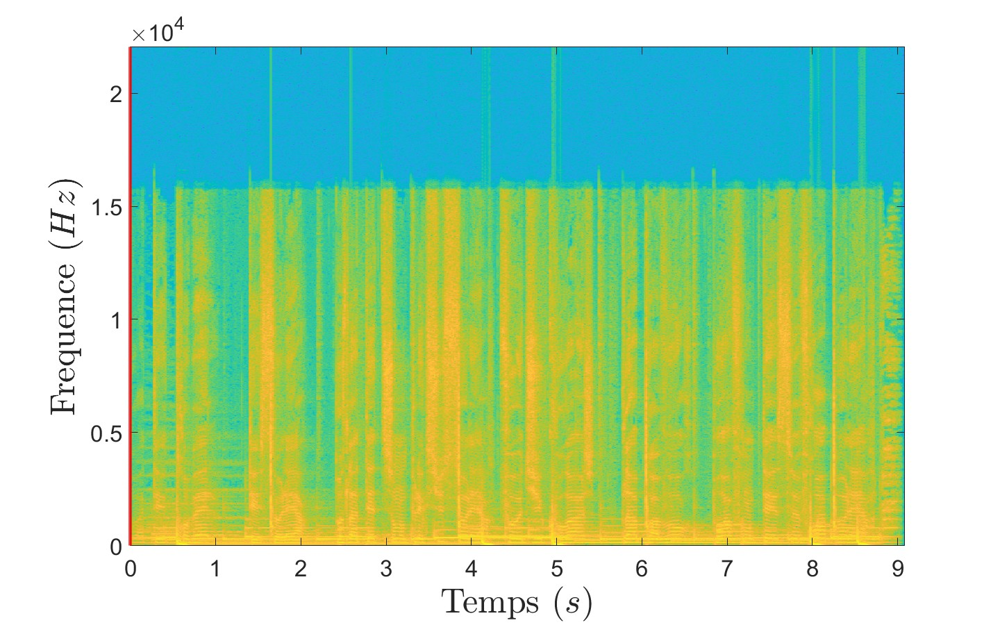
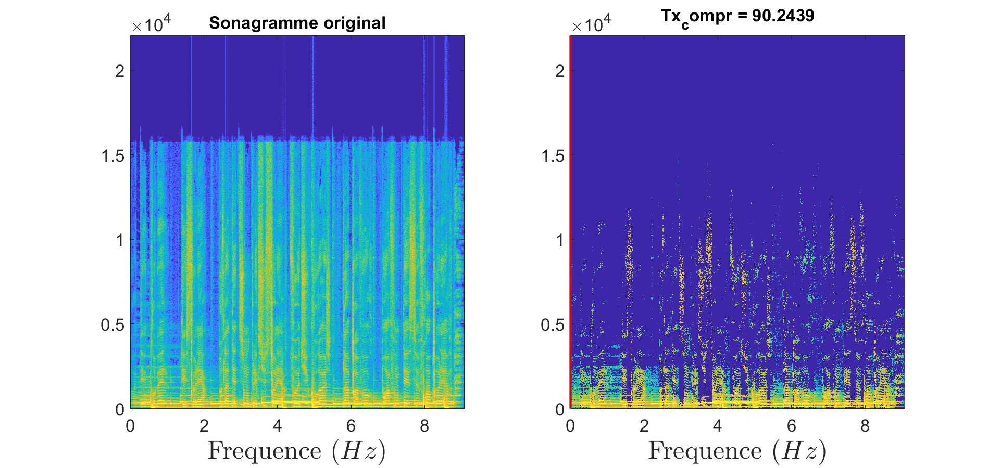
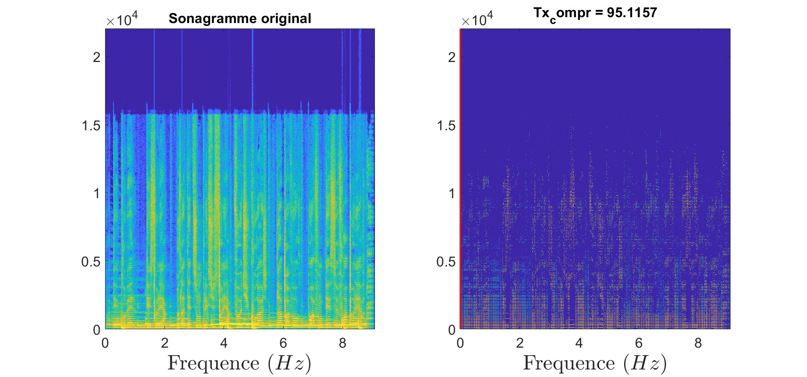

Projet de Traitement audiovisuelle
TP10 - Manipulation de signaux audionumériques
Dans cette partie, nous nous proposons de travailler sur le traitement de données audio ! En effet, ce domaine du traitement de données présente de nombreuses applications intéressantes, que je vais tenter de vous présenter ici.
Dans un premier temps, nous verrons comment travailler sur le son, puis comment le compresser et enfin comment lui appliquer des transformations.
TFCT et ITFCT
Pour travailler de manière efficace et pertinente sur le son, nous utiliserons le merveilleux outil qu’est le sonagramme ! Le sonagramme affiche l'évolution du spectre d’un signal au cours du temps, offrant ainsi une représentation en trois dimensions : le temps, la fréquence et l’amplitude.
Pour le construire, nous avons besoin de passer dans le domaine fréquentiel et ce à court terme, c’est-à-dire sur une plage définie. On peut également choisir la pondération entre les plages pour adoucir le rendu (Rectangulaire ou Hann). Voilà mon implémentation de la TFCT :
function Y = TFCT(y, N, D, fenetre)
Y = buffer(y, N, N-D, 'nodelay');
fenetre = strcmp(fenetre, 'hann') * hann(N) + strcmp(fenetre, 'rect') * ones(N, 1);
Y = fft(Y .* fenetre(:));
Y = Y(1:floor(N/2) + 1, :);
end
Pour tester notre fonction, nous allons utiliser un extrait de la musique Polaire de Gen:
Voici le sonagramme obtenu avec la fonction TFCT :
Nous devons mtn implémenter le chemin inverse pour reconstruire le signal d’origine. Voilà mon implémentation de la ITFCT (légère modification) :
function y = ITFCT(Y, N, D, fenetre)
Y(end+1:N, :) = 0;
w = strcmp(fenetre, 'hann') * hann(N) + strcmp(fenetre, 'rect') * ones(N, 1);
n = (size(Y, 2) - 1) * D + N;
y = zeros(n, 1);
w_sum = zeros(n, 1);
for t = 1:size(Y, 2)
idx = (1:N) + (t - 1) * D;
y(idx) = y(idx) + ifft(Y(:, t), 'symmetric') .* w;
w_sum(idx) = w_sum(idx) + w.^2;
end
y(w_sum ~= 0) = y(w_sum ~= 0) ./ w_sum(w_sum ~= 0);
y = y(D:end-D);
end
On peut vérifier que le signal reconstruit est bien le même que le signal d’origine :
Compression
La compression vise à conserver uniquement une faible proportion des coefficients de Fourier (les plus élevés). Une première implémentation naïve vise à garder uniquement les k coefficients les plus importants par colonne du sonagramme :
function [Y_modifie, taux_compression] = compression(Y, k)
% Conserver les k valeurs les plus hautes
Y_modifie = zeros(size(Y));
for col = 1:size(Y, 2)
[~, indices] = maxk(Y(:, col), k);
Y_modifie(indices, col) = Y(indices, col);
end
% Calcul du taux de compression
taux_compression = (1 - nnz(Y_modifie) / numel(Y)) * 100;
end
On peut alors tester notre fonction de compression sur le sonagramme de Polaire :
Avec cette première implémentation (figure 31), on obtient tout de même 90% de compression. Pour améliorer ce résultat, on peut faire de la décimation, c’est-à-dire retirer des lignes et des colonnes dans le sonagramme avant de garder les coefficients les plus importants :
function [Y_modifie, taux_compression] = compression_decimation(Y, m, df)
% Décimer le sonagramme Y
Y_decimated = Y(1:df:end, 1:df:end);
Y_modifie_decimated = zeros(size(Y_decimated));
for col = 1:size(Y_decimated, 2)
[~, indices] = maxk(Y_decimated(:, col), m);
Y_modifie_decimated(indices, col) = Y_decimated(indices, col);
end
% Reconstituer le sonagramme avec des zéros aux positions supprimées
Y_modifie = zeros(size(Y));
Y_modifie(1:df:end, 1:df:end) = Y_modifie_decimated * df;
% Calculer le taux de compression
taux_compression = (1 - nnz(Y_modifie) / numel(Y)) * 100;
end
On peut tester notre nouvelle fonction de compression sur le sonagramme de Polaire (df = 2) :
Transformations
Enfin, on peut appliquer des transformations sur le sonagramme pour obtenir des effets intéressants. Voila une liste de transformations que j’ai implémentées.